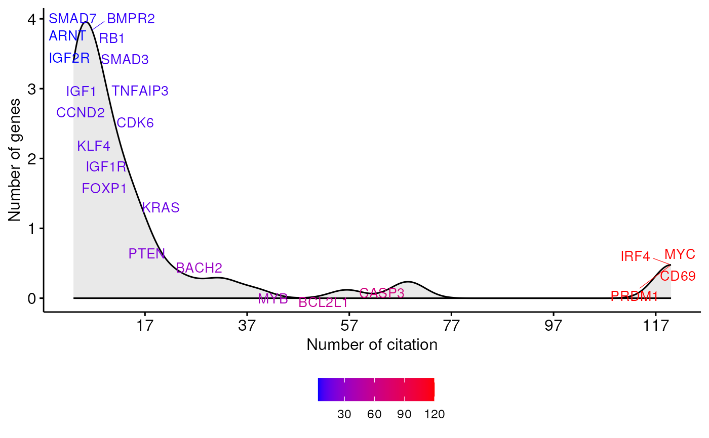

Contains the mean citation index of 66 genes obtained by assessing PubMed abstracts and annotations using two key words i) Gene name + b cell differentiation and ii) Gene name + plasma cell differentiation.
data("gene_citation")A data frame with 66 rows and 2 columns.
genegene names
citation_indexmean citation index
data(gene_citation)
# Some key genes of interest to be highlighted
key.gns <- c("MYC", "PRDM1", "CD69", "IRF4", "CASP3", "BCL2L1", "MYB", "BACH2", "BIM1", "PTEN",
"KRAS", "FOXP1", "IGF1R", "KLF4", "CDK6", "CCND2", "IGF1", "TNFAIP3", "SMAD3", "SMAD7",
"BMPR2", "RB1", "IGF2R", "ARNT")
# Density distribution
ggdensity(gene_citation, x = "citation_index", y = "..count..",
xlab = "Number of citation",
ylab = "Number of genes",
fill = "lightgray", color = "black",
label = "gene", label.select = key.gns, repel = TRUE,
font.label = list(color= "citation_index"),
xticks.by = 20, # Break x ticks by 20
gradient.cols = c("blue", "red"),
legend = "bottom",
legend.title = "" # Hide legend title
)
#> Warning: Ignoring unknown labels:
#> • colour : ""
#> • linetype : ""
#> • shape : ""
#> Warning: Ignoring unknown labels:
#> • linetype : ""
#> • shape : ""
